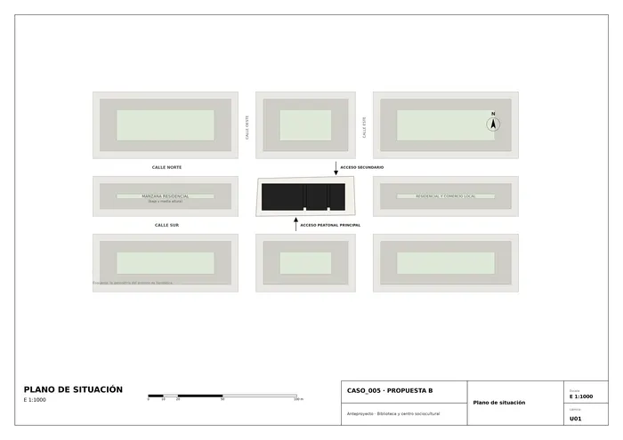
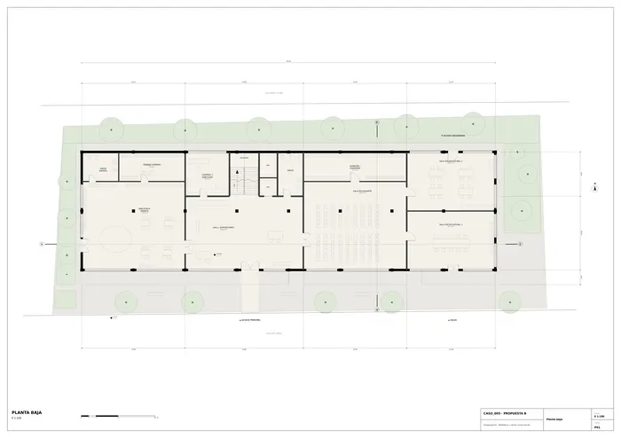
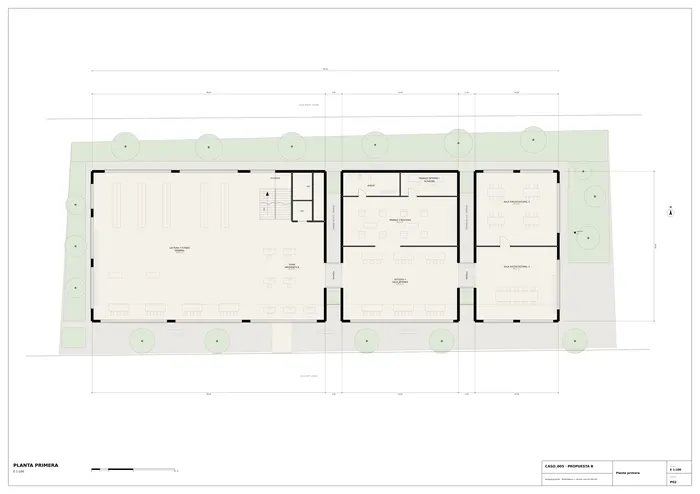
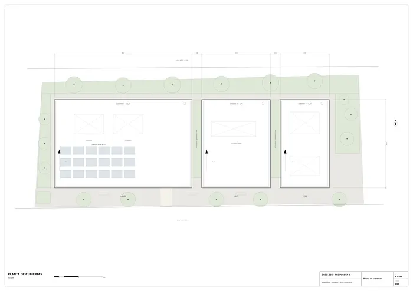
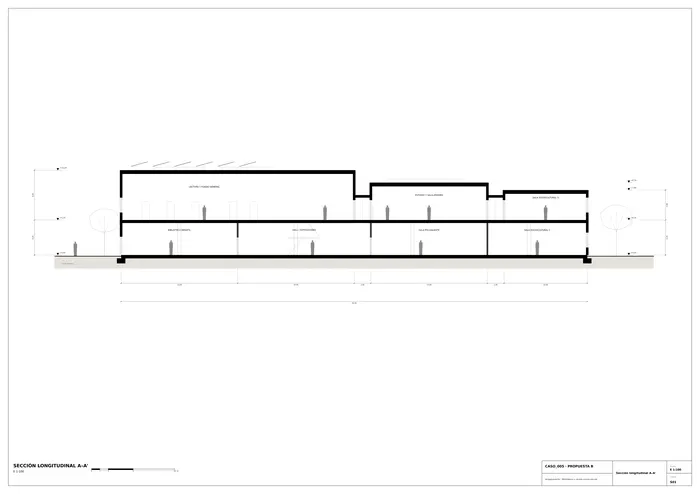
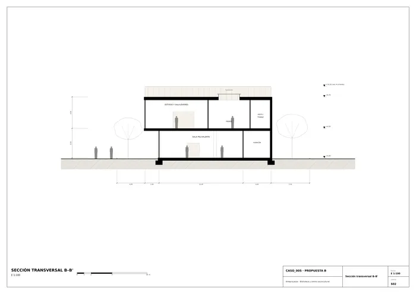
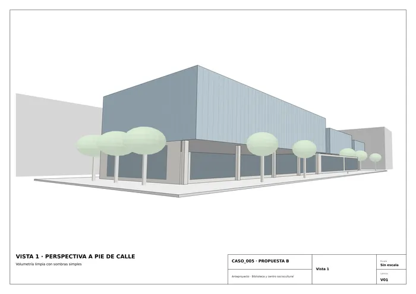
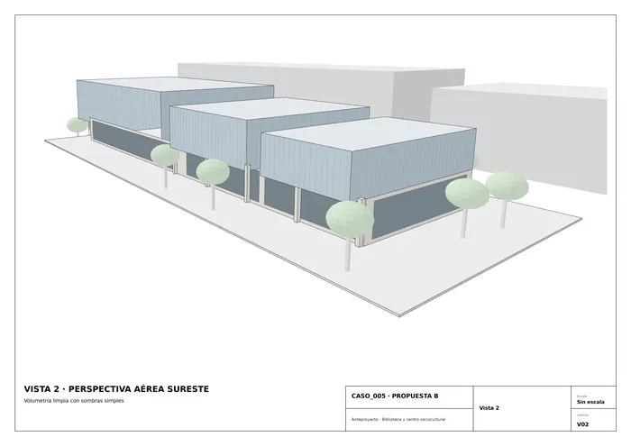

Caso 005 · Singular Studio (J. Moragues; F. Nieto; R. Paternina) · 2014 · equipamiento cultural
Un zócalo transparente y tres cajas de distinta altura que "flotan" sobre él. La planta baja es un plano continuo, vidriado y accesible desde la plaza, donde se concentran los usos de más afluencia (hall, biblioteca infantil, sala polivalente, salas de asociaciones). Encima, tres volúmenes cerrados y revestidos de lamas verticales de tono azul grisáceo (+10,20 / +8,70 / +7,80) alojan la biblioteca de adultos y jóvenes y las salas del centro sociocultural. Entre ellos, dos ranuras de luz de 2 m con terraza ajardinada y pasarelas acristaladas. El voladizo de 2 m hacia la calle sur crea un porche de acceso.
Del boceto se toman la fragmentación del prisma alargado en piezas de alturas distintas, el trazo vertical de sus caras (lamas), la base baja y horizontal con pilares, y el árbol junto al acceso. Se ha precisado la fragmentación (3 piezas con ranuras de 2 m), se ha definido el zócalo como plano vidriado y se ha ordenado el programa en dos plantas. No se reproduce la inclinación de las caras del dibujo (cubiertas planas con 2 % de pendiente).
| Uso | m² |
|---|---|
| Biblioteca general: lectura/fondo 350,0 · informática 91,6 · estudio/jóvenes 120,2 · prensa 80,1 | 641,9 |
| Biblioteca infantil | 162,2 |
| Sala polivalente / exposiciones | 163,1 |
| Centro sociocultural (4 salas) | 353,3 |
| Control, dirección, trabajo interno y almacenes | 138,3 |
| Aseos e instalaciones | 76,2 |
| Hall, escalera, ascensor y pasarelas | 221,5 |
| Total útil | 1.756,5 |
Superficie construida ≈ 1.844 m² (PB 896 + P1 936 + pasarelas 12; el voladizo de 104 m² no computa), dentro del rango orientativo de 1.300–2.100 m². Ocupación ≈ 55 % de la parcela. Espacio exterior libre: plaza, jardín infantil, patio este, franja norte y dos terrazas de luz.
El plano de situación usa un entorno hipotético. Escala de plantas y secciones: 1:100.

U01 · Situación
P01 · Planta baja
P02 · Planta primera
P03 · Cubiertas
S01 · Sección longitudinal
S02 · Sección transversal
V01 · Vista 1
V02 · Vista 2Memoria de la propuesta tal como la entregó el sistema. Se han omitido las notas internas del proceso (revisiones, control de reconocimiento y referencias a archivos de trabajo).